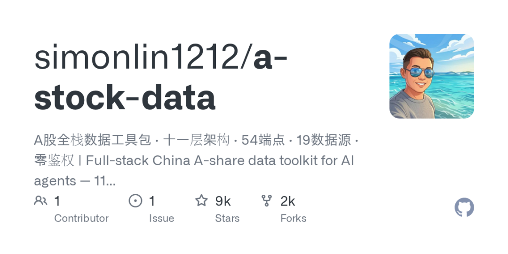
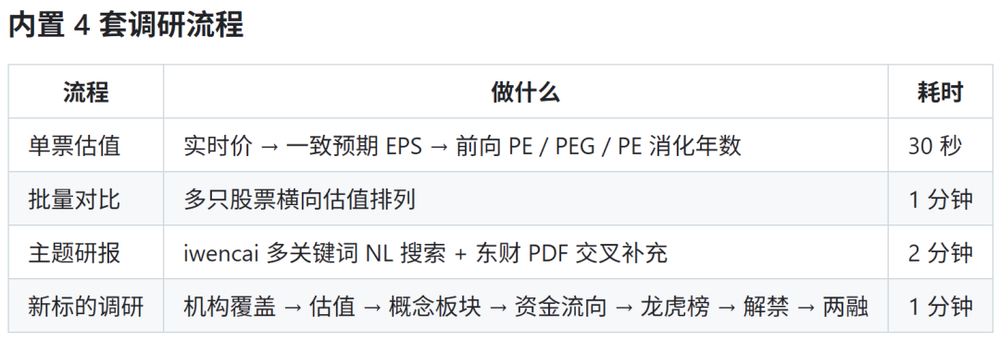
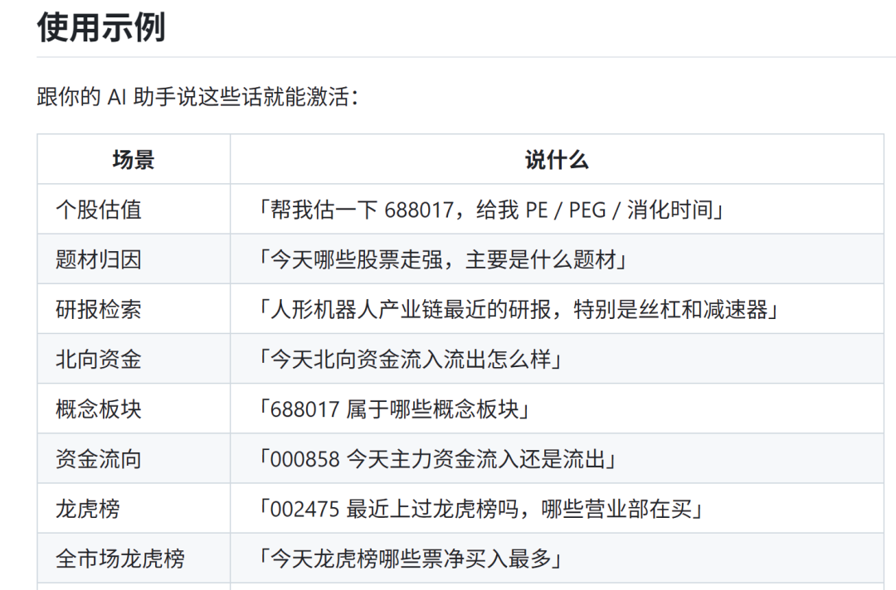

90 天涨了 8000 多 Star。
这个项目不卖账号，不接 API Key，一句话就能让 AI 跑完 A 股投研全流程。
GitHub：https://github.com/simonlin1212/a-stock-data

01 痛点
做 A 股投研，数据是最头疼的。
东财的 Referer 头要手动填，iwencai 的鉴权 header 一换就 401，北向资金要自己去查 HKEX 接口。每个数据源一个坑，凑齐一套投研工具至少折腾半天。
更烦的是，很多开源工具依赖 akshare，一升级就炸，换个 Python 版本又得重来。
这个项目把这些问题全部解决了。
就一个 Skill：一个 Markdown + 内嵌 Python 的单文件，丢进 Claude Code 就能用。
02 它到底能干什么
一句话：你问 AI 一句话，它自己去查数据、出结果。
不用写代码，不用配接口，不用管鉴权。
行情数据： 实时报价、K 线（带 MA5/MA10/MA20）、五档盘口、复权因子，腾讯/百度/新浪三源互备，封了自动切。
研报分析： 东财个股研报、行业研报、一致预期 EPS，PDF 直接下载，还支持自然语言跨主题检索。
资金面： 融资融券明细、大宗交易、股东户数、分红送转、120 日资金流，东财直连，零鉴权。
筹码分布： 这是 V3.7 新增的——获利比例、平均成本、90% 成本区间，本地用 OHLC + 换手率推演，不用额外数据源。
打板数据： 涨停池、炸板池、跌停池、昨日涨停表现、涨停原因题材，同花顺 + 东财双源。
估值历史： 茅台从 2016 年至今的日频 PE/PB/PS/PCF，带换手率和 ST 标记，2581 行数据。
北交所支持： V3.6 修复了老号段（43x/83x/87x）迁移到 920 的兼容问题，旧码直接抛异常而不是静默返回空数据。
备用源机制： 东财被封？有备胎。交易所官方 + 新浪 + HKEX，三层降级，主源挂了自动切，对使用者透明。

03 用起来有多简单
三步，2 分钟。
mkdir -p ~/.claude/skills/a-stock-data
curl -o ~/.claude/skills/a-stock-data/SKILL.md \
https://raw.githubusercontent.com/simonlin1212/a-stock-data/main/SKILL.md
pip install mootdx requests pandas stockstats numpy baostock xlrd openpyxl然后打开 Claude Code，说一句：
"帮我看看 688017 的估值"
AI 自动激活 Skill，查数据，出结果。
不用你管它去哪个源查的，被封了它自己换。你只管问。

04 为什么值得
第一，省时间。以前配数据源要半天，现在一句话开始用。
第二，零成本。19 个数据源，全部免费，不花钱买 API。
第三，真能跑。9K Star 不是吹的，作者持续在更新（V3.7 今天刚发），FAQ 写得非常细——东财被封怎么办、北交所老号段怎么处理、token 消耗怎么降，全部有答案。
第四，作者靠谱。他还有个 global-stock-data（美股 + 港股，1.5K Star），专注金融数据这一块，持续迭代。
第五，适配多个平台。Claude Code、Codex、OpenClaw 都能用，不绑定单一产品。
写在最后
一个 Skill 文件，9K Star，把 A 股投研的数据门槛直接打没。
如果你平时用 AI 做投研，装一个试试。
https://github.com/simonlin1212/a-stock-data